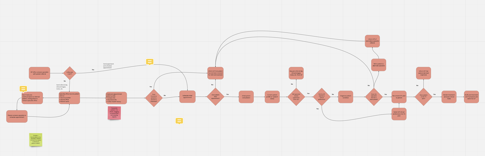
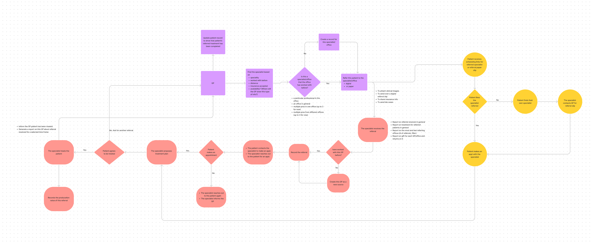
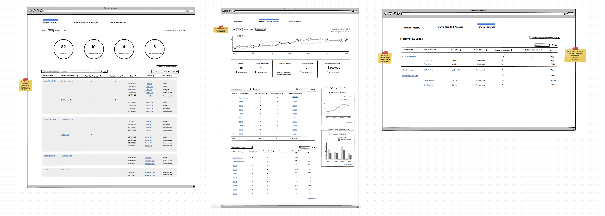
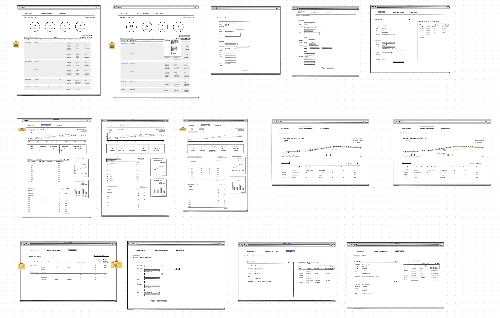
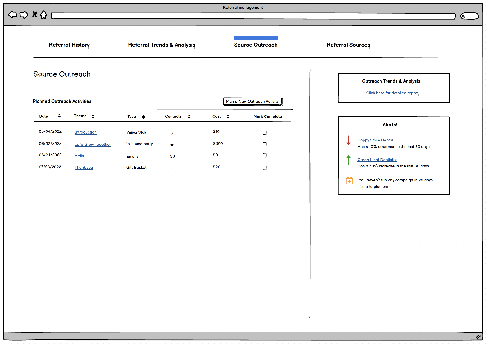
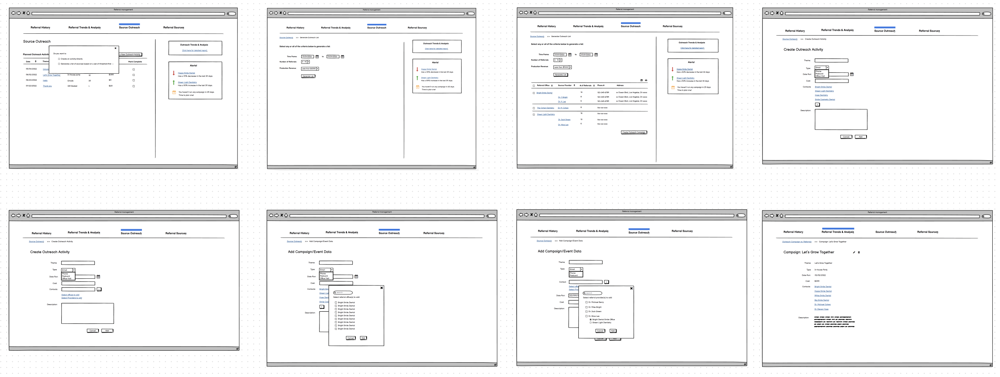
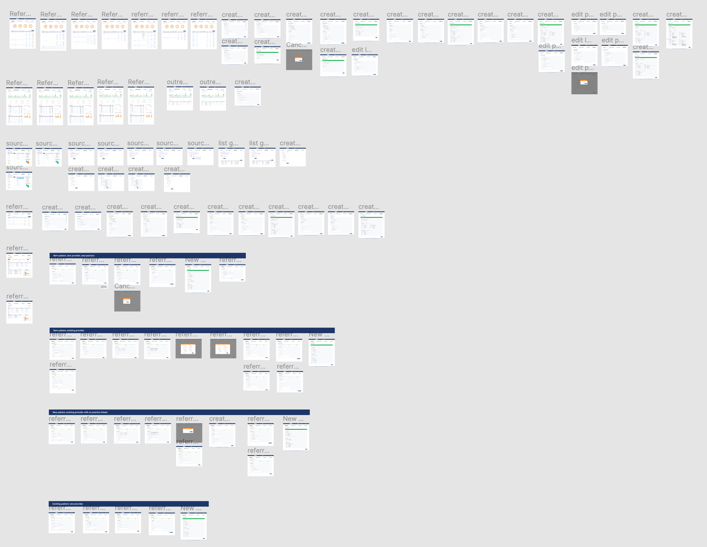

SaaS Product Referral Manager
 Duration: 6 months
Duration: 6 months
 Tools: Balsamiq, Figma, MS Team, Usertesting.com
Tools: Balsamiq, Figma, MS Team, Usertesting.com
 My Roles: User Research, Information Architecture, Design, Prototyping
My Roles: User Research, Information Architecture, Design, Prototyping
The process of sending and receiving referrals is crucial for the smooth operation of a dental practice. Unfortunately, our users currently lack a system to track the referrals they have sent out and received. This absence of data prevents users from analyzing patient referral trends, assessing key business indicators, and monitoring whether patients are receiving the necessary treatment.
When I joined the project, the product manager had already conducted thorough user interviews, establishing a solid grasp of user needs. To catch me up, we held multiple sessions to review the user diagram created by the PM. Using this knowledge, I crafted my own user flow, which I then discussed with the PM to ensure the inclusion of critical details. Following several rounds of discussions, I now have a well-defined understanding of the problem and user requirements. It's time to progress to the sketching phase.

Figure 1: PM's User Diagram

Figure 2: My Understanding of the Diagram
The user research identified three primary needs for our users:
- Monitoring the quantity of received referrals.
- Incorporating newly received referrals into the system.
- Tracking providers who sent referrals to them.
Therefore, my initial design centered on these essential functionalities.


Figure 3: Wireframe Version 1
To guarantee our solution aligns with user needs, we carried out a round of moderated testing with our target users. The initial findings were positive, with users expressing their satisfaction with the design. However, it became evident that, for referral-related marketing campaigns, users needed more comprehensive data to establish a clear link between their campaigns and the generated referrals. This would allow them to identify successful campaigns and replicate them in the future. Furthermore, our users expressed a reluctance towards the term "marketing campaign."
Following user feedback and a thorough review of the testing results, I implemented language changes in the design. Specifically, I replaced the term "marketing campaigns" with "source outreach" to avoid generating a negative sentiment. Moreover, I introduced a dedicated platform section for these outreach activities, allowing users to initiate new activities, define budgets, and monitor invitations and responses.


Figure 4: Source Outreach
Due to project confidentiality, I cannot provide detailed design visuals. Here is a sneak peak of the design.

Figure 8: Design sneak peak